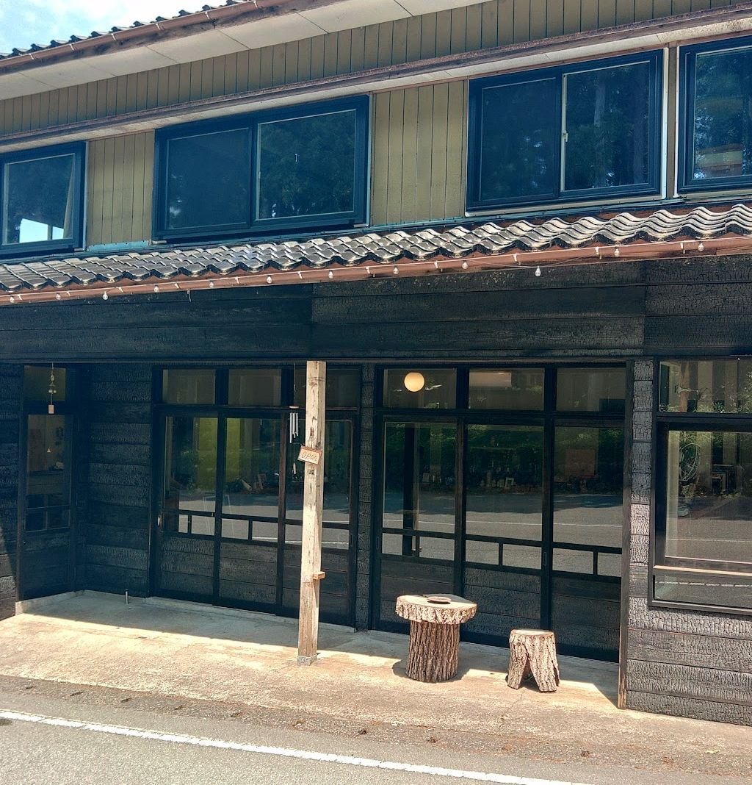

p.01
LA PAGODE(ラ パゴッド)
Sado, Niigataラ パゴッド ／ 新潟県佐渡市 阿佛坊

Vol.01 ・ Sado
裏庭の鶏と、
森のきのこと、
島の生産者と。
妙宣寺五重塔の目の前に、2022年、ジル・スタッサール氏と今井朋氏のご夫妻のお店がオープンしました。食材は、市場を通さず、生産者から直接仕入れています。掲載記事(2025年1月)より
Contents
目次
-
02庭と森と島p.02
裏庭の鶏、森のきのこ、島の生産者。掲載記事をもとに、お店のこととご夫妻の歩みを読み物にしました。
-
03ひと皿ずつp.03
Googleマップに投稿された写真と口コミ、記事で紹介された料理の例、ドリンクを、別々に並べました。
-
04アクセスp.04
住所、電話、地図、営業日時と、両津港からの行き方。

Googleマップの評価とクチコミ
Googleマップの評価 4.6
Googleマップ ・ クチコミ67件
「店内の雰囲気はヨーロッパ風で、暖かみがあり、居心地が良かったです。」
「余計な味付けがない分、こちらも五感をフルに使って食べようとするし、それに料理も応えてくれる。」
クチコミの一部を抜粋しています。
お電話・Instagram・アクセス
お電話、またはお店のInstagramからどうぞ。
電話する 090-9246-7264 Instagramを見る(別ウィンドウで開きます) アクセスと営業日時へ →— 01 / 04 —
次のページ: p.02 庭と森と島 →